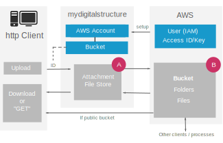

|
|
|
|
| |
GETTING STARTED
AWS SIMPLE STORAGE SERVICE (S3)
INTEGRATION
|
mydigitalstructure includes methods that allow you to store files on S3 using your own AWS account.
The AWS S3 service can be used in conjunction with (or in place of) the default mydigitalstructure file storage, which is accessed via the core ATTACHMENT methods.
|
Some typical use cases:
- Storing website/app files on S3 for access via http clients
improving website/app performance via parallel downloading
and use of AWS CDN (CloudFront)
- Backing up files
including versioning
- Accessing/reading files created via another clients/processes
for data integration
- Exporting large amounts of data
which can then be accessed using S3 resources/tools
|
|

|
|
TECHNICAL NOTES
|
| 1 |
Set up your AWS Account details in mydigitalstructure |
Use SETUP_AWS_ACCOUNT_MANAGE to add the Access ID/Key for your AWS account to mydigitalstructure.
The associated AWS user will need permissions to the S3 resources you plan to access from mydigitalstructure.
All AccessID/Key combinations are saved using AES256 encryption on mydigitalstructure.
|
| 2 |
Set up your buckets on mydigitalstructure |
Once you have created the bucket within your S3 account ("B"), use SETUP_AWS_S3_BUCKET_MANAGE to add it to and make it accessible via mydigitalstructure.
|
| 3 |
Attach an object/file |
Using the standard CORE_ATTACH method, set the &bucket= to the mydigitalstructure assigned ID of the bucket.
You can also specify &bucketfilenameN= [where N is file index when uploading multiple, starting with 0] when posting a file if you want to control folders / filenames. Otherwise, it defaults to object name / id / filename.
|
| 4 |
Reading an object/file |
Use the standard CORE_ATTACHMENT_READ
|
| 5 |
Import an object/file to mydigitalstructure |
Using CORE_ATTACHMENT_IMPORT and specifying a bucket ID, filename & mydigitalstructure object/ID, you can copy a file from AWS S3 to the mydigitalstructure attachment/file store. You can then use standard core ATTACHMENT methods to interact with the file.
|
| 6 |
Downloading an object/file |
If the bucket is public, then the object/file can be accessed directly using standard AWS S3 methods.
|
|
|
EXAMPLE USE CASES
|
| A |
Reacting to files from other clients / processes |
A common real world use case is reacting and absorbing data created by other clients/processes. ie specialist software, intelligent machines, cash registers etc. Many of these clients don't have programmable http clients, but can produce files.
In that case, once the client has created the file, you could:
- use the clients hosting operating system to produce an index file with a known filename ie index.txt or index.json.
- then upload the files and the index file to your S3 bucket.
- use the mydigitalstructure CORE_ATTACHMENT_READ to read the index file.
- using the index data, use CORE_ATTACHMENT_IMPORT to get the files into mydigitalstructure.
- process the files as required.
|
| B |
Making processed data available to other clients |
In this case you use mydigitalstructure methods to:
- get data stored on mydigitalstructure & process
- using a known file name or convention save on mydigitalstructure and also push it to the S3 bucket
- other clients with access to the S3 bucket can then use and process the data in the object/files as required - with no direct knowledge of mydigitalstructure.
|
|
|
|
| |
EXAMPLE AWS POLICY TO SHARE A BUCKET
{
"Version": "2012-10-17",
"Statement": [
{
"Effect": "Allow",
"Action": ["s3:ListBucket"],
"Resource": ["arn:aws:s3:::bucket-name"]
},
{
"Effect": "Allow",
"Action": [
"s3:PutObject",
"s3:GetObject",
"s3:DeleteObject"
],
"Resource": ["arn:aws:s3:::bucket-name/*"]
}]}
|
|

|
|
|
|